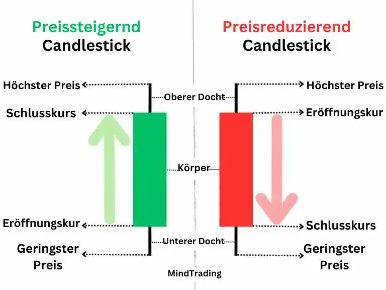

Ein Kerzenchart besteht aus mehreren Kerzenständern. Jeder Kerzenständer repräsentiert vier entscheidende Preisniveaus einer Aktie in einem bestimmten Zeitrahmen, nämlich: den Eröffnungspreis, den Schlusspreis, den Höchstpreis und den Tiefstpreis.

Jeder Kerzenständer besteht aus zwei Komponenten, um diese vier Niveaus genau darzustellen. Insbesondere,
Mittelfetter Körper:
Dies ist der wichtigste Teil. Er zeigt die Differenz zwischen dem Eröffnungs- und dem Schlusspreis innerhalb eines bestimmten Zeitrahmens an. Bei einem bullischen Kerzenständer, bei dem der Preis gestiegen ist, kennzeichnet das untere Ende die Eröffnung und das obere Ende den Schluss. Im Gegensatz dazu ist es bei einem bärischen Kerzenständer, bei dem der Preis gefallen ist, genau umgekehrt — das obere Ende kennzeichnet die Eröffnung und das untere Ende den Schlusspreis. Der Körper eines bullischen Kerzenständers ist typischerweise grün (obwohl er manchmal auch schwarz oder gefüllt sein kann), während der Körper eines bärischen Kerzenständers typischerweise rot ist (obwohl er manchmal auch weiß oder hohl sein kann).
Schatten oder Docht:
Über und unter dem Körper befinden sich zwei Schatten oder Dochte, die jeweils den höchsten und niedrigsten Preis innerhalb des gleichen Zeitrahmens darstellen. Je nach Muster der Preisbewegung sind jedoch nicht immer zwei Dochte vorhanden.
Beispiel:
Das untenstehende Bild zeigt zwei 15-Minuten-Kerzenständer von Adani Enterprises vom heutigen Datum (25/10/24). Es stellt sechs Kerzenständer im Bereich von drei bis dreißig dar.

Der erste Kerzenständer zeigt eine Zeitdauer von 2:00 bis 2:15 Uhr. Das bedeutet, dass er um 2:00:00 Uhr begann sich zu bilden und um 2:14:59 Uhr vollständig geformt bzw. geschlossen war. Die Farbe seines Körpers ist grün, was darauf hinweist, dass der Eröffnungspreis am unteren Rand seines Körpers liegt, das sind 1837 Euro, und der Schlusspreis am oberen Rand, das sind 1860,10 Euro. Der untere Docht zeigt eine Ebene von 1828 Euro und deutet darauf hin, dass der Preis während dieser 15 Minuten mindestens einmal auf dieses niedrigste Niveau gefallen ist.
Ebenso liegt die Ebene am Ende des oberen Dochts bei 1875 Euro, was darauf hindeutet, dass der höchste Preis während dieser Periode mindestens einmal auf 1875 Euro angestiegen ist.
Die zweite Kerze begann um 2:15 bei einem Level von 1860,80 Euro zu formen, nachdem die erste Kerze bei 1860,10 Euro geschlossen hatte. Ihre Farbe ist rot, da sie unter dem Eröffnungskurs von 1850,10 Euro geschlossen hat.
Eine weitere Besonderheit ist, dass es keinen unteren Docht gibt. Das liegt daran, dass der Schlusspreis und der niedrigste Preis in diesem Fall identisch sind.
Die dritte Kerze besitzt ebenfalls keinen sichtbaren Körper. Der Grund dafür ist, dass der Eröffnungs- und Schlusspreis in diesem Fall gleich sind. Der Rest der Beschreibung im Bild scheint nun nicht mehr nötig zu sein, da er mittlerweile klar sein sollte.